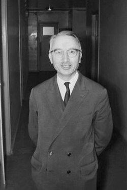

1904-2008
Henri Cartan

Portrait: Konrad Jacobs, Erlangen, CC BY-SA 2.0 de, Wikimedia Commons.
Events (5)
- 1906Several complex variables and Hartogs
developer · Complex analysis
- 1942Homological algebra
systematiser · Algebra
- 1946Sheaf theory and sheaf cohomology
systematiser · Algebraic geometry
- 1955Abelian categories and derived functors (Tohoku)
systematiser · Category & homological algebra
- 1955Serre GAGA
developer · Algebraic geometry